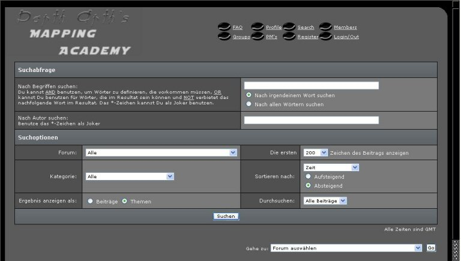

Dazu gibt es drei Methoden.
- Methode 1: Problem ins Deutsche übersetzen
- Methode 2: Mit der "Suche" - Funktion die Foren durchsuchen
- Methode 3: Google - Die internetsuchmachine
Methode 1
Eine Fehlermeldung kommt beim kompilieren deiner Map?
Versuch einmal die Meldung ins Deutsche zu übersetzen.
Z.B.: "Map Leaked"
übersetzt heisst es soviel wie "Map hat ein Loch, ein Leck eine
"undichte Stelle"".
=> Es ist nötig das Loch zu finden und zu stopfen, die undichte Stelle zu
beseitigen.
Ein weiteres Beispiel: "MAX_MAP_FOGS (30)"
MAX = Maximale
MAP = Map
FOG = Nebel
EXCEEDED = überschritten
(Maximale Anzahl an Nebel-Brushes pro Map überschritten)
Also sagt uns diese Fehlermeldung, dass man zu viele Nebel-/Wasser - Brushes in
der Map hat.
Wie ihr sieht, kann man durch das Übersetzen der Fehlermeldung schon einiges herausfinden.
Methode 2
In Foren wurde schon nahezu jede Fehlermeldung und nahezu jedes Problem besprochen.
Doch dieses Wissen ist nicht tief vergraben, sondern nur mit einer kleinen Staubschicht versehen ;-)
Um dieses zu finden nehmen wir ein Jedi Knight 2 - Jedi Outcast / Jedi Knight - Jedi Academy Forum, welches eine Mapping / Editing -Sektion enthält.
z.B.:
- Darth-Arth's Forum
- Jedi-Knight3.de -Forum
Für unser Beispiel nehmen wir Darth-Arth's Forum.
Mit unserer Frage wenden wir uns an die Suchfunktion.
Es sollte so aussehen:

Nehmen wir an, unser Fehler ist "MAX_MAP_FOGS (30)".
Jetzt geben wir ganz einfach in der Leiste "Nach Begriffen suchen" unser Problem ein:
Dann klicken auf auf "Suchen" oder drücken einfach "ENTER".
Und schon haben wir jede Menge potentielle Fehlerlösungen vor uns.
Wie ihr seht, ist auch dies relativ einfach! Man muss nur ein wenig lesen.
Ein kleiner Hinweis: Wenn ihr eine Lösung in einem Thread nicht verstanden habt, und keine andere Lösung findet, dann bitte erst dann einen neuen Thread erstellen.
Methode 3
Der Name unserer dritten Methode ist:
http://www.google.de
Hier benutzt man eigentlich dasselbe Verfahren, wie bei Methode 2 nur das wir
kein einzelnes Forum, sondern das GANZE Internet durchsuchen.
Wir geben wieder unsere Fehlermeldung ein und schauen, was für Ergebnisse rauskommen.
Alternativ schreiben wir noch "JK3" oder "JK2" oder "Q3" dazu. Denn Jedi Knight ist nicht das einzige Spiel, für das man mappen kann ;-)
Auch ganz simpel, nur muss man bei dieser Lösung ein wenig Englisch können, da viele Google-Ergebnisse auf Englisch sind.
Und wenn das alles nicht hilft, dann fragt euren Lehrer (der inzwischen online seien sollte) oder schreibt ins Forum.
Das wars auch schon!
Jetzt habt ihr 3 effektive Methoden eure Probleme selber zu lösen, ohne zu groß auf die Nerven eurer Lehrer oder den Leuten im
Foren zu gehen ;-)